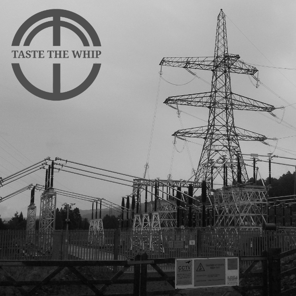

Track 02 · The Body Eclectic
William Cody's Wild West Indian Circus
Listen
Chord shapestap a chord in the lyrics too
Lyrics
A E D ABuffalo Bill stood atop of the hillD B7 EThe campfires glowed miles aroundA E D ABy the side of the Clyde, almost half a mile wideA F#mThere was no spare ground to be found,E E7 AWhen William Cody's Wild West Indian Circus came to town
D AGeronimo he know where the top people goE ANot for him the blanket on the grassD A F#mHe found himself a bed, at The Saracen's HeadE E7And got himself a splinter on the arse
Two Pistol Pete was swift on his feetBut as for a mind he did begHe bought himself a hoss, from the boys of Partick CrossAnd the poor beast was missing a leg
Jenny the squaw, she was nae use at a'Her culinary skills would amazeShe bought from The Brigg, what she thought was a pigWe were chewing the gristle for days
Sheriff John Tett with the big larietCould hold 20 steers with a ropeBut he ventured too far, towards Louden BarAnd passed out in a blue cloud of dope
Princess McBride from the Navajo tribeWent to the Barrowland BallShe woke up in Glasgow Green, and felt like a QueenShe never returned there at all.
© Derek Reid